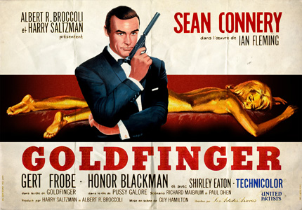
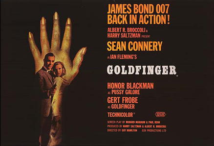

Goldfinger (1964) |
||||
 |
||||
Directed by |
- |
Guy Hamilton | ||
Produced by |
- |
Harry Saltzman Albert R. Broccoli |
||
Screenplay by |
- |
Richard Maibaum |
||
Cinematography |
- |
Ted Moore | ||
Edited by |
- |
Peter R. Hunt | ||
Production Designer |
- |
Ken Adam | ||
Production Company |
- |
Eon Productions | ||
Distributed by |
- |
United Artists | ||
Release date |
- |
17 September 1964 | ||
Running time |
- |
110 minutes | ||
Theme Song |
- |
"Goldfinger" (John Barry, with lyrics by Anthony Newley and Leslie Bricusse) | ||
Sung by |
- |
Shirley Bassey | ||
Music |
- |
John Barry | ||
Title Sequence |
- |
Robert Brownjohn | ||
Budget |
- |
$3 million | ||
Box office |
- |
$125 million | ||
Cast |
||||
Sean Connery |
- |
James Bond | ||
Gert Fröbe |
- |
Auric Goldfinger (voiced by Michael Collins): A wealthy, psychopathic man obsessed with gold. | ||
Honor Blackman |
- |
Pussy Galore: Goldfinger's personal pilot and leader of an all-female team of pilots known as Pussy Galore's Flying Circus. | ||
Shirley Eaton |
- |
Jill Masterson: Goldfinger's assistant, whom Bond catches helping the villain cheat at a game of cards. He seduces her but, for her betrayal, she is completely painted in gold paint and dies from "skin suffocation". | ||
Harold Sakata |
- |
Oddjob: Goldfinger's lethal Korean manservant. | ||
Tania Mallet |
- |
Tilly Masterson: The sister of Jill Masterson, she is on a vendetta to avenge her sister, but is killed by Oddjob. | ||
Bernard Lee |
- |
M: The head of the British Secret Service. | ||
Cec Linder |
- |
Felix Leiter: Bond's CIA liaison in the United States. | ||
Martin Benson |
- |
Mr Solo: The lone gangster who refuses to take part in Operation Grand Slam and is later killed by Oddjob and crushed in his car. | ||
Desmond Llewelyn |
- |
Q: The head of Q-Branch. | ||
Lois Maxwell |
- |
Miss Moneypenny: M's secretary. | ||
Austin Willis |
- |
Mr Simmons: Goldfinger's gullible gin rummy opponent in Miami. | ||
Michael Mellinger |
- |
Kisch: Goldfinger's secondary and quiet henchman and loyal lieutenant who leads his boss's false Army convoy to Fort Knox. | ||
Burt Kwouk |
- |
Mr Ling: A Communist Chinese nuclear fission specialist who provides Auric Goldfinger with the dirty bomb to irradiate the gold inside Fort Knox. | ||
Richard Vernon |
- |
Colonel Smithers: the Bank of England official. | ||
Margaret Nolan |
- |
Dink: Bond's masseuse from the Miami hotel sequence. | ||
Gerry Duggan |
- |
Hawker: Bond's golf caddy. | ||
Nadja Regin |
- |
Bonita: dancer who sets a trap for Bond in the pre-credit sequence. | ||
Synopsis |
||||
After destroying a drug laboratory in Latin America, James Bond travels to Miami Beach to receive instructions from his superior, M, via CIA agent Felix Leiter. He is to observe bullion dealer Auric Goldfinger at his hotel. Bond sees Goldfinger cheating at gin rummy and stops him by distracting his employee, Jill Masterson, and blackmailing Goldfinger into losing. After Bond and Jill consummate their new relationship, Bond is knocked out by Goldfinger's Korean manservant Oddjob. When Bond awakens, he finds Jill dead, covered in gold paint, having died from "skin suffocation." In London, the chancellor of the exchequer and M explain to Bond that gold prices vary across the world, allowing one to profit by selling bullion internationally, and his objective is determining how Goldfinger does it by smuggling. Bond arranges to meet Goldfinger socially at his country club in Kent, and wins a high-stakes golf game against him with a recovered Nazi gold bar at stake. Bond follows him to Switzerland, where Tilly, Jill's sister, makes an unsuccessful attempt at revenge by firing a rifle at Goldfinger. Bond sneaks into Goldfinger's plant and discovers Goldfinger smuggles gold by melting it down and incorporating it into the bodywork of his car, which he takes with him whenever he travels. Bond also overhears Goldfinger talking to Chinese agent Mr. Ling about "Operation Grand Slam." Leaving, Bond encounters Tilly as she tries to kill Goldfinger again, but trips an alarm in the process. Oddjob kills Tilly with his hat, and Bond is captured and tied to a cutting table underneath an industrial laser, which begins to slice a sheet of gold in half, with Bond lying over it. He then lies to Goldfinger that MI6 knows about Grand Slam, causing Goldfinger to spare Bond's life to mislead MI6 into believing Bond has things in hand. Bond is transported by Goldfinger's private jet, piloted by Pussy Galore, to his stud farm near Fort Knox, Kentucky. Bond escapes and witnesses Goldfinger's meeting with US mafiosi, who have brought the materials he needs for Operation Grand Slam. Although they are each promised $1 million, Goldfinger tempts them that they could have the million today, or $10 million tomorrow, and relates Grand Slam, revealed to be his plan to rob Fort Knox. He then kills them using the "Delta 9" nerve gas he plans to release over Fort Knox. Bond is recaptured and tells Goldfinger his plan to rob the gold depository will not work, as he will not have enough time to move the gold before the Americans intervene. Goldfinger hints he does not intend to steal the gold, and Bond deduces that Goldfinger will detonate a dirty bomb inside the vault, designed to render the gold useless for 58 years. This will increase the value of Goldfinger's own gold and give the Chinese an advantage from the potential economic chaos. Goldfinger subtly threatens that should the Americans attempt to locate the bomb or interfere with his plan, he will simply have it detonated somewhere of significance in the United States. Operation Grand Slam begins with Pussy Galore's Flying Circus spraying the gas over Fort Knox. However, Bond had seduced Galore and convinced her to replace the nerve gas with a harmless substance and alert the US government about Goldfinger's plan. The military personnel of Fort Knox play dead until they are certain that they can capture the bomb and prevent the criminals from escaping. Believing the military forces to be neutralized, Goldfinger's private army breaks into Fort Knox and accesses the vault itself as Goldfinger arrives in a helicopter with the atomic device. In the vault, his henchman Kisch handcuffs Bond to the bomb. The troops arise and attack, killing many of Goldfinger's men. Seeing this, Goldfinger locks the vault, takes off his coat, revealing a US Army colonel's uniform, and kills Mr. Ling and several troops, before escaping. Kisch realizes they are trapped and attempts to stop the bomb, but Oddjob throws him to his death. Bond frees himself with Kisch's handcuff keys, but Oddjob repeatedly attacks him before he can disarm the bomb. Eventually Bond manages to electrocute Oddjob, then forces the lock off the bomb using gold bullion bars from the vault, but ultimately is unable to disarm it. After finally killing all of Goldfinger's men, the troops open the vault and rush to disarm the bomb. An atomic specialist who accompanied Leiter arrives with seconds to spare, and simply turns off the device with the timer stopped on "0:07". Bond is invited to the White House for lunch with the President. However, Goldfinger hijacks the plane carrying Bond there. In a struggle for Goldfinger's revolver, the gun fires, shooting out a window, creating an explosive decompression. Goldfinger is blown out of the cabin through the ruptured window. With the plane out of control, Bond rescues Galore and they parachute safely from the aircraft before it crashes into the ocean. A rescue helicopter passes over, but Bond claims they do not need to be rescued and they ignore it. |
||||
Casting |
||||
Sean Connery reprised the role of Bond for the third time in a row. His salary rose, but a pay dispute later broke out during filming. After he suffered a back injury when filming the scene where Oddjob knocks Bond unconscious in Miami, the dispute was settled: Eon and Connery agreed to a deal where the actor would receive 5% of the gross of each Bond film in which he starred. Honor Blackman was selected for the role of Pussy Galore because of her role in The Avengers, and the script was rewritten to show Blackman's judo abilities. The character's name follows in the tradition of other Bond girls names that are double entendres. Concerned about censors, the producers thought about changing the character's name to "Kitty Galore", but they and Hamilton decided "if you were a ten-year old boy and knew what the name meant, you weren't a ten-year old boy, you were a dirty little bitch. The American censor was concerned, but we got round that by inviting him and his wife out to dinner and [told him] we were big supporters of the Republican Party." During promotion, Blackman took delight in embarrassing interviewers by repeatedly mentioning the character's name. While the American censors did not interfere with the name in the film, they refused to allow the name "Pussy Galore" to appear on promotional materials and for the US market she was subsequently called "Miss Galore" or "Goldfinger's personal pilot". Orson Welles was considered as Goldfinger, but his financial demands were too high; Theodore Bikel auditioned for the role, but failed. Gert Fröbe was cast because the producers saw his performance as a child molester in the German film Es geschah am hellichten Tag. Fröbe, who spoke little English, said his lines phonetically, but was too slow. To redub him, he had to double the speed of his performance to get the right tempo. The only time his real voice is heard is during his meeting with members of the Mafia at Auric Stud. Bond is hidden below the model of Fort Knox whilst Fröbe's natural voice can be heard above. However, he was redubbed for the rest of the film by stage actor Michael Collins. Shirley Eaton was sent by her agent to meet Harry Saltzman and agreed to take the part if the nudity was done tastefully. It took an hour-and-a-half to apply the paint to her body. Although only a small part in the film, the image of her painted gold was renowned and Eaton appeared on the cover of Life magazine on 6 November 1964. Director Guy Hamilton cast Harold Sakata, an Olympic silver medalist weightlifter, as Oddjob after seeing him on a wrestling programme. Hamilton called Sakata an "absolutely charming man", and found that "he had a very unique way of moving, [so] in creating Oddjob I used all of Harold's own characteristics". Sakata was badly burned when filming his death scene, in which Oddjob was electrocuted by Bond. Sakata, however, kept holding onto the hat with determination, despite his pain, until the director called "Cut!" Oddjob has been described as "a wordless role, but one of cinema's great villains." Cec Linder was the only actor actually on location in Miami. Linder's interpretation of Leiter was that of a somewhat older man than the way the character was played by Jack Lord in Dr. No; in reality, Linder was a year younger than Lord. According to screenwriter Richard Maibaum, Lord demanded co-star billing, a bigger role and more money to reprise the Felix Leiter role in Goldfinger that led the producers to recast the role. At the last minute, Cec Linder switched roles with Austin Willis who played cards with Goldfinger Guy Hamilton told Desmond Llewelyn to inject humour into the character of "Q", thus beginning the friendly antagonism between him and Bond that became a hallmark of the series. He had already appeared in the previous Bond film From Russia With Love and, with the exception of Live and Let Die, would continue to play "Q" in the next 16 Bond films. |
||||
Filming |
||||
With the court case between Kevin McClory and Fleming surrounding Thunderball still in the High Court, producers Albert Broccoli and Harry Saltzman turned to Goldfinger as the third Bond film. Goldfinger had what was then considered a large budget of $3 million (US$24 million in 2017 dollars), the equivalent of the budgets of Dr. No and From Russia with Love combined, and was the first Bond film classified as a box-office blockbuster. Goldfinger was chosen with the American cinema market in mind, as the previous films had concentrated on the Caribbean and Europe. Terence Young, who directed the previous two films, chose to film The Amorous Adventures of Moll Flanders instead, after a pay dispute that saw him denied a percentage of the film's profits. Broccoli and Saltzman turned instead to Guy Hamilton to direct. Hamilton, who had turned down directing Dr. No, felt that he needed to make Bond less of a "superman" by making the villains seem more powerful. Hamilton knew Fleming, as both were involved during intelligence matters in the Royal Navy during World War II. Goldfinger saw the return of two crew members who were not involved with From Russia with Love: stunt coordinator Bob Simmons and production designer Ken Adam. Both played crucial roles in the development of Goldfinger, with Simmons choreographing the fight sequence between Bond and Oddjob in the vault of Fort Knox, which was not just seen as one of the best Bond fights, but also "must stand as one of the great cinematic combats" whilst Adam's efforts on Goldfinger were "luxuriantly baroque" and have resulted in the film being called "one of his finest pieces of work". Principal photography on Goldfinger commenced on 20 January 1964 in Miami, Florida, at the Fontainebleau Hotel; the crew was small, consisting only of Hamilton, Broccoli, Adam and cinematographer Ted Moore. Sean Connery never travelled to Florida to film Goldfinger because he was filming Marnie elsewhere in the United States. On the DVD audio commentary, director Guy Hamilton states that other than Cec Linder who played Felix Leiter, none of the main actors in the Miami sequence were actually there. Connery, Gert Frobe, Shirley Eaton, Margaret Nolan who played Dink, and Austin Willis, who played Goldfinger's card victim, all filmed their parts on a soundstage at Pinewood Studios when filming moved there. Miami also served as location to the scenes involving Leiter's pursuit of Oddjob. After five days in the US, production moved to England. The primary location was Pinewood Studios, home to among other sets, a recreation of the Fontainebleau, the South American city of the pre-title sequence and both Goldfinger's estate and factory. Three places near the studio were used, Black Park for the car chase involving Bond's Aston Martin and Goldfinger's henchmen inside the factory complex, RAF Northolt for the American airports and Stoke Park Club for the golf club scene. The end of the chase, when Bond's Aston Martin crashes into a wall because of the mirror and the chase immediately preceding it, were filmed on the road at the rear of Pinewood Studios Sound Stages A and E and the Prop Store. The road is now called Goldfinger Avenue. Southend Airport was used for the scene where Goldfinger flies to Switzerland. Ian Fleming visited the set of Goldfinger in April 1964; he died a few months later in August 1964, shortly before the film's release. The second unit filmed in Kentucky, and these shots were edited into scenes filmed at Pinewood. Principal photography then moved to Switzerland, with the car chase being filmed at the small curves roads near Realp, the exterior of the Pilatus Aircraft factory in Stans serving as Goldfinger's factory, and Tilly Masterson's attempt to snipe Goldfinger being shot in the Furka Pass. Filming wrapped on 11 July at Andermatt, after nineteen weeks of shooting. Just three weeks prior to the film's release, Hamilton and a small team, which included Broccoli's stepson and future producer Michael G. Wilson as assistant director, went for last-minute shoots in Kentucky. Extra people were hired for post-production issues such as dubbing so the film could be finished in time. Broccoli earned permission to film in the Fort Knox area with the help of his friend, Lt. Colonel Charles Russhon. To shoot Pussy Galore's Flying Circus gassing the soldiers, the pilots were only allowed to fly above 3,000 feet. Hamilton recalled this was "hopeless", so they flew at about 500 feet, and "the military went absolutely ape". The scenes of people fainting involved the same set of soldiers moving to different locations. For security reasons, filming and photography were not allowed near or inside the United States Bullion Depository. All sets for the interiors of the building were designed and built from scratch at Pinewood Studios. The filmmakers had no clue as to what the interior of the depository looked like, so Ken Adam's imagination provided the idea of gold stacked upon gold behind iron bars. Adam later told UK daily newspaper The Guardian: "No one was allowed in Fort Knox but because Cubby Broccoli had some good connections and the Kennedys loved Ian Fleming's books I was allowed to fly over it once. It was quite frightening – they had machine guns on the roof. I was also allowed to drive around the perimeter but if you got out of the car there was a loudspeaker warning you to keep away. There was not a chance of going in it, and I was delighted because I knew from going to the Bank of England vaults that gold isn't stacked very high and it's all underwhelming. It gave me the chance to show the biggest gold repository in the world as I imagined it, with gold going up to heaven. I came up with this cathedral-type design. I had a big job to persuade Cubby and the director Guy Hamilton at first." Saltzman disliked the design's resemblance to a prison, but Hamilton liked it enough that it was built. The comptroller of Fort Knox later sent a letter to Adam and the production team, complimenting them on their imaginative depiction of the vault. United Artists even had irate letters from people wondering "how could a British film unit be allowed inside Fort Knox?" Adam recalled, "In the end I was pleased that I wasn't allowed into Fort Knox, because it allowed me to do whatever I wanted." In fact, the set was deemed so realistic that Pinewood Studios had to post a 24-hour guard to keep the gold bar props from being stolen. Another element which was original was the atomic device, to which Hamilton requested the special effects crew to get inventive instead of realistic. Technician Bert Luxford described the end result as looking like an "engineering work", with a spinning engine, a chronometer and other decorative pieces. |
||||
Additional Posters |
||||
  |
|
|||